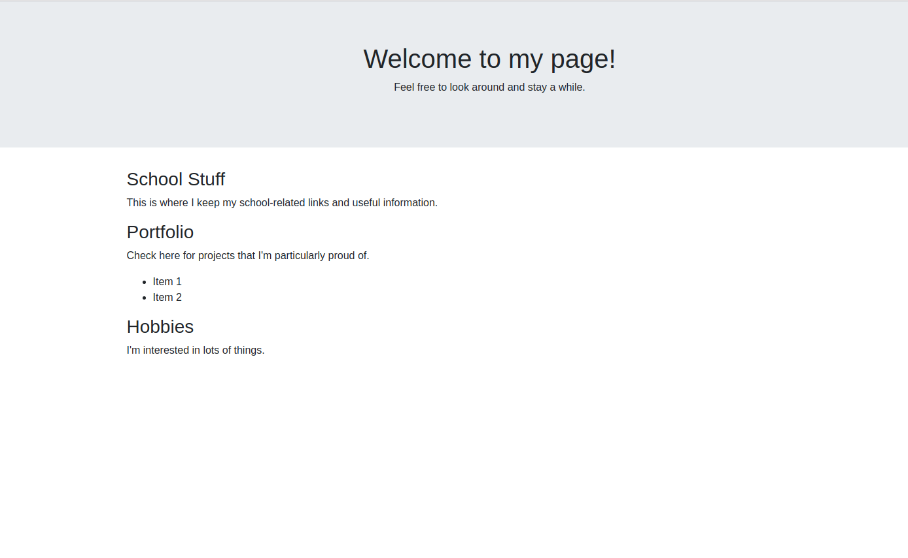
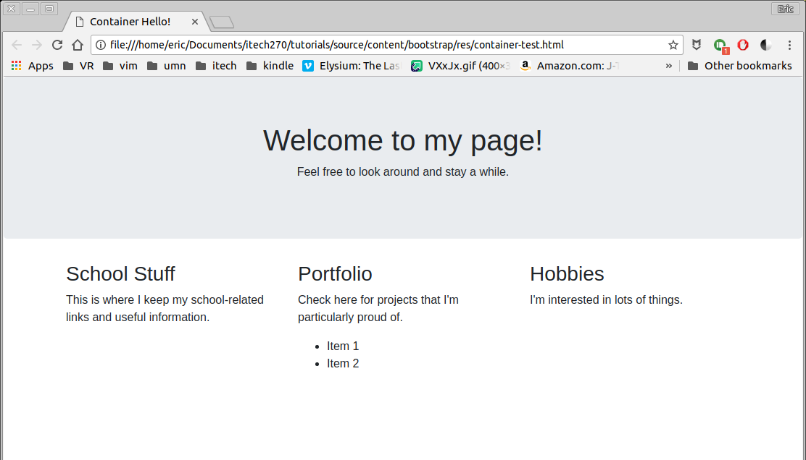
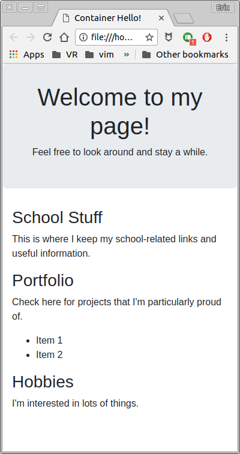

Containers¶
So how do I use Bootstrap? If you’ve gotten this far, then we’ll assume that you know about CSS and especially CSS classes. The majority of what you’ll do when you use Bootstrap to enhance your Web page is simply apply classes to HTML tags that are already there.
You will, however, often have to surround chunks of code with div tags in order to do this. This does, to some extent, violate the semantic philosophy of HTML, but, the end result is so nice that the compromise is kind of worth it.
There are two main container classes in Bootstrap:
.containeris a fixed-width container that takes up the strip in the center of the page. It’s the one you’ll most often use..container-fluidis a container that fills the entire width of the viewport (the browser window).
In addition to these, we will look at the basics of the Bootstrap grid system and the .jumbotron class.
Note: You don’t need containers to use a lot of Bootstrap’s built-in widgets, however, you will need it to use the really handy Bootstrap grid system. Let’s try it:
Clone the repository for this tutorial if you have not already //TODO link to repo
The majority of Bootstrap’s styling is done by surrounding various code snippets with
<div>tags using Bootstrap classes. So let’s surround the first part of the page with a<divand add the.jumbotronclass as well as center the text:1 2 3 4
<div class="jumbotron text-center"> <h1>Welcome to my page!</h1> <p>Feel free to look around and stay a while.</p> </div>
Reload the web page and observe the results. There are plenty of ways that we can use the jumbotron container. You can add a background image to it to add visual interest, for example.
Next, Surround the rest of the page content with another div tag and the
.containerclass, like so:1 2 3
<div class="container"> ... Your Code Here ... </div>
Reloading the page will give you this:

{kind=link}
The most obvious visual effect of using the container here is that the content that is in the container now has padding on left and right. The content is now constrained to a column in the center of the browser’s viewport. But it has also enabled Bootstrap’s grid system.
Bootstrap’s containers (both .container and .container-fluid) are divided into 12 imaginary columns and we can constrict the content of our web page to those columns in any way we wish. This works much like HTML’s default table tags, but it has one important added feature which is that it can change depending on the width of the viewport (the browswer/screen). In fact, with Bootstrap 4, this has gotten even easier. We use div tags to give it structure and the classes we use are as follows
| Bootstrap Class | Purpose |
|---|---|
.container |
Required to enable the grid system |
.row |
Defines one row of a grid, much like an HTML table |
.col |
Defines a simple, reactive column. |
There are other classes in the grid system that can be used to gain granular control of the “breakpoints” where columns will re-sort themselves as the viewport gets more narrow. More information about this can be found here. Let’s see this in action.
In your example page, you already have some dummy content inside the
.containerclass. There are three headings. We’re going to make each of these sections into its own column. Surround all of this content with a<div class="row">...</div>tag.Next, Look at each heading and its content and surround each one with
<div class="col">...</div>The result should look like this:1 2 3 4 5 6 7 8 9 10 11 12 13 14 15 16 17 18 19 20
<div class="container"> <div class="row"> <div class="col"> <h3>School Stuff</h3> <p>This is where I keep my school-related links and useful information.</p> </div> <div class="col"> <h3>Portfolio</h3> <p>Check here for projects that I'm particularly proud of.</p> <ul> <li>Item 1</li> <li>Item 2</li> </ul> </div> <div class="col"> <h3>Hobbies</h3> <p>I'm interested in lots of things.</p> </div> </div> </div>
Save an reload your page in your browser and observe the results. Also, resize the window and observe how the columns change when you do so.

{kind=link}
There is one problem with how we’ve implemented this at the moment. What bootstrap does when you use the .col class by itself is to count the number of columns you have in this row and give each column an equal share of the 12 available columns. So if there are three columns, then each one gets 4 columns of space, or 1/3 of the width of the container. It also, you might have noticed, does this across all screen sizes. Bootstrap has a way to fix this:
Go back to your code and look at everywhere that you have used the
.colclass and change it to.col-sm:1 2 3 4
<div class="col-sm"> <h3>School Stuff</h3> <p>This is where I keep my school-related links and useful information.</p> </div>
Do this for all three columns and then save and reload your web page. Now resize the window and see what happens.

At first, you won’t notice anything, but as you shrink the web browser window, once it hits the breakpoint for the .col-sm class (540px to be exact), all of the columns will automatically stack on top of each other. Essentially, you have told the browser to make three equal columns unless it’s a small screen, then just make one column. You can swap out sm for other sizes as the link above describes. In fact, you can use multiple classes for each column in order to define multiple breakpoints and in this way, you have a lot of control over how your information will arrange itself, but at the same time, the minute details of how it’s all managed are taken care of for you.
Add some color¶
For fun, let’s add an image to our .jumbotron. This will give us the chance to see how Bootstrap can mesh with the stuff that we’ve already done in this course. So, what we’ll do is add a stylesheet of our own to this web page.
Find an image that you wish to use. Ideally, use a fairly large image. I am using this image
Create a new text file and call it
style.css. We are going to apply some extra style directly to the.jumbotronclass. What’s that you say? How can we do that? Since Bootstrap is basically just a css file to begin with, you can apply your own styles to any of those classes as well. So let’s use the following code:1 2 3 4 5 6 7 8 9 10
.jumbotron { background: #000 url("discovery2.jpg") no-repeat center center; background-size: cover; padding-top: 100px; padding-bottom: 100px; } .jumbotron h1,p { color: white; }
A couple of things to take note of. First, we are specifically selecting the
.jumbotronclass, which will no overwrite the Bootstrap class, but instead add styles to it. If you link this stylesheet after the Bootstrap stylesheet, this will get loaded after it. Next, pay careful attention to what each style is doing. The background style sets the image and a background color (in this case, black). It sets it to not repeat and center it vertically and horizontally. Setting the background-size to cover tells the browser to scale the image as large as possible without stretching. It will crop anything that doesn’t fit. And then we added some padding to make it fit nicely on the page.Then, to the html file, let’s add our link to the new stylesheet. Bear in mind that for this simple example, I’m keeping everything in the same folder. In any production site, I would almost certainly split up images, stylesheets, and html files into separate folders.
1
<link rel="stylesheet" href="style.css" type="text/css" />
{kind=link}
You may have to fiddle around with some of these settings depending on the image you are using to make it look right at all screen widths, however, this is the result of the above settings:
One thing to remember here is that you will have to carefully select a photo that works well as a jumbotron image. Some do not.
{kind=link}